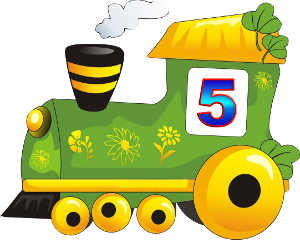

Компьютерная игра «Поезд».

Цель: формировать у детей понятие о составе числа из единиц.
Дидактические задачи:
- Закрепить знания о цифрах до 5.
- Формировать представление о составе числа из единиц до 5.
- Упражнять в количественном счёте.
- Упражнять в сравнении нескольких множеств по длине.
- Формировать умение делать выводы, умозаключения.
Игровые действия:
- Составить поезд №1- присоединить один вагон.
- Составить поезд №2- сколько надо присоединить вагонов? Так составляем пять поездов.
- Сравнить поезда по длине, найти самый короткий, самый- длинный.
Нажми на поезд, чтобы он поехал. Поезд поедет только с правильным числом вагонов.